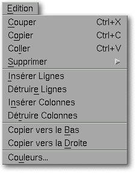
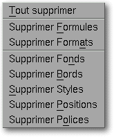

<!-- Documentation XQuad (c)1995-2000 AXENE contact axene@axene.org>
<html>

<head>
<title>Menu Edition</title>
</head>

<body BGCOLOR="#FFFFFF" BACKGROUND="Images/back.gif" TEXT="#000000">

<p ALIGN="right">  </p>

<p><br>
<br>
Le menu déroulant Edition donne accès aux fonctions de communication avec le
presse-papiers, de suppression des différents éléments caractérisant une cellule,
d'insertion / destruction des lignes / colonnes, de recopie vers le bas ou vers la droite
et d'édition de la liste des couleurs. <br>
<br>
</p>

<hr>

<p align="center"><br>
 <br>
<small><i>Photo d'écran&nbsp;: Menu déroulant Edition </i></small></p>

<p><br>
</p>

<hr>

<p><br>
</p>

<h3>Le menu Edition comporte les entrées suivantes&nbsp;:</h3>

<ul>
  <li><a NAME="cut_menu_entry">l'entrée <i>&quot;Couper&quot;</i> permet de <b>couper les
    cellules sélectionnées et de les copier dans le presse-papiers</b>. Elle agit de la
    même manière que le premier </a><a HREF="HBar_Misc.html#cut_icon">bouton icône</a> de
    la deuxième section de la barre horizontale d'icônes 'Manipulations générales'. <br>
    &nbsp;</li>
  <li><a NAME="copy_menu_entry">l'entrée <i>&quot;Copier&quot;</i> permet de <b>copier les
    cellules sélectionnées dans le presse-papiers</b>. Elle agit de la même manière que le
    deuxième </a><a HREF="HBar_Misc.html#copy_icon">bouton icône</a> de la deuxième section
    de la barre horizontale d'icônes 'Manipulations générales'. <br>
    &nbsp;</li>
  <li><a NAME="paste_menu_entry">l'entrée <i>&quot;Coller&quot;</i> permet de <b>coller les
    cellules du presse-papiers dans la feuille de calcul</b>. Elle agit de la même manière
    que le dernier </a><a HREF="HBar_Misc.html#paste_icon">bouton icône</a> de la deuxième
    section de la barre horizontale d'icônes 'Manipulations générales'. <br>
    &nbsp;</li>
  <li><a NAME="delete_menu_entry">l'entrée <i>&quot;Supprimer&quot;</i> permet d'ouvrir le
    sous-menu suivant, lorsque des cellules sont sélectionnées&nbsp;: </a><p align="center"> </p>
    <ol>
      <li><a NAME="delete_all_menu_entry">l'entrée <i>&quot;Tout supprimer&quot;</i> permet de <b>vider
        les cellules sélectionnées de leur contenu et de leur décoration</b>. Les cellules
        retrouveront leur état initial comme à la création de la feuille de calcul. Cette
        action est équivaux à <i>&quot;Supprimer Formules&quot;</i> suivi de <i>&quot;Supprimer
        Formats&quot;</i>.</a><br>
        <a NAME="delete_all_menu_entry"></a>&nbsp;</li>
      <li><a NAME="delete_formulas_menu_entry">l'entrée <i>&quot;Supprimer Formules&quot;</i>
        permet de <b>vider les cellules sélectionnées de leur contenu</b>. La décoration des
        cellules ne sera pas affectée. </a><br>
        &nbsp;</li>
      <li><a NAME="delete_formats_menu_entry">l'entrée <i>&quot;Supprimer Formats&quot;</i>
        permet de <b>ré-initialiser la décoration des cellules sélectionnées</b>. Toutes les
        cellules sélectionnées reprendront leur apparence par défaut à la création de la
        feuille de calcul. L'action de cette entrée est équivalente à l'action successive des
        entrées suivantes de ce sous-menu. </a><br>
        &nbsp;</li>
      <li><a NAME="delete_patterns_menu_entry">l'entrée <i>&quot;Supprimer Fonds&quot;</i> permet
        de <b>ré-initialiser le motif de fond des cellules sélectionnées</b>. Le motif de fond
        par défaut correspond au premier motif du <i>&quot;Catalogue de fonds&quot;</i> de la
        boîte de dialogue '</a><a HREF="Box_CellPattern.html#section_pattern">Attribution de fond
        aux cellules</a>'. <br>
        &nbsp;</li>
      <li><a NAME="delete_borders_menu_entry">l'entrée <i>&quot;Supprimer Bordures&quot;</i>
        permet de <b>supprimer tous les bords de toutes les cellules sélectionnées</b>. Le
        premier bouton icône de la première section de la barre horizontale d'icône '</a><a HREF="HBar_Ornament.html#noborder_icon">Décoration des cellules</a>' a le même effet. <br>
        &nbsp;</li>
      <li><a NAME="delete_styles_menu_entry">l'entrée <i>&quot;Supprimer Styles&quot;</i> permet
        de <b>ré-initialiser le format des nombres de toutes les cellules sélectionnées</b>.
        Les cellules sélectionnées reprendront le format de nombre par défaut&nbsp;: le format
        de nombre <i>&quot;Standard&quot;</i> défini dans la boîte de dialogue '</a><a HREF="Box_NumFormat.html">Mise en forme des nombres</a>'. <br>
        &nbsp;</li>
      <li><a NAME="delete_positions_menu_entry">l'entrée <i>&quot;Supprimer Positions&quot;</i>
        permet de <b>ré-initialiser les paramètres de positionnement des cellules
        sélectionnées</b>. Par défaut, le contenu des cellules est aligné à gauche pour les
        textes et à droite pour nombres, verticalement centré, en mode simple ligne et en mode
        d'écriture horizontale de gauche à droite. </a><br>
        &nbsp;</li>
      <li><a NAME="delete_fonts_menu_entry">l'entrée <i>&quot;Supprimer Polices&quot;</i> permet
        de <b>ré-initialiser les polices de caractère des cellules sélectionnées</b>. Par
        défaut, les cellules utilisent la police de caractère nommée <i>&quot;Style&quot;</i>
        défini dans la boîte de dialogue '</a><a HREF="Box_Font.html">Composition des polices</a>'.
      </li>
    </ol>
    <p><a NAME="delete_frame_menu_entry">Lorsque des cadres sont sélectionnés, l'entrée <i>&quot;Supprimer&quot;</i>
    permet de supprimer tous les cadres sélectionnés. </a></p>
  </li>
  <li><a NAME="insert_rows_menu_entry">l'entrée <i>&quot;Insérer Lignes&quot;</i> permet d'<b>insérer
    des lignes au niveau de la sélection de cellules</b>. Le nombre de lignes insérées
    correspondra au nombre de lignes de la sélection. Les lignes seront insérées au-dessus
    de la première ligne de la région de cellules sélectionnées. Les lignes au niveau et
    au-dessous seront décalées vers le bas. Les lignes ne seront insérées que dans les
    colonnes faisant partie de la sélection de cellule. Pour insérer des lignes sur toute la
    largeur de la feuille de calcul, il faut sélectionner des lignes entières. Cette entrée
    n'est pas accessible si plusieurs régions de cellules ou des colonnes entières sont
    sélectionnés. </a><br>
    &nbsp;</li>
  <li><a NAME="delete_rows_menu_entry">l'entrée <i>&quot;Détruire Lignes&quot;</i> permet de
    <b>supprimer des lignes au niveau de la sélection de cellules.</b> Toutes les cellules de
    la région sélectionnée seront détruites et les cellules situées au-dessous seront
    décalées vers le haut. Les lignes ne seront détruites que dans les colonnes faisant
    partie de la sélection. Pour détruire des lignes sur toute la largeur de la feuille de
    calcul, il faut sélectionner des lignes entières. Cette entrée n'est pas accessible si
    plusieurs régions de cellules ou des colonnes entières sont sélectionnés. </a><br>
    &nbsp;</li>
  <li><a NAME="insert_columns_menu_entry">l'entrée <i>&quot;Insérer Colonnes&quot;</i>
    permet d'<b>insérer des colonnes au niveau de la sélection de cellules.</b> Le nombre de
    colonnes insérées correspondra au nombre de colonnes de la sélection. Les colonnes
    seront insérées à gauche de la première colonne de la région de cellules
    sélectionnées. Les lignes au niveau et à droite seront décalées vers la droite. Les
    colonnes ne seront insérées que dans les lignes faisant partie de la sélection de
    cellule. Pour insérer des colonnes sur toute la hauteur de la feuille de calcul, il faut
    sélectionner des colonnes entières. Cette entrée n'est pas accessible si plusieurs
    régions de cellules ou des lignes entières sont sélectionnés. </a><br>
    &nbsp;</li>
  <li><a NAME="delete_columns_menu_entry">l'entrée <i>&quot;Détruire Colonnes&quot;</i>
    permet de <b>supprimer des lignes au niveau de la sélection de cellules.</b> Toutes les
    cellules de la région sélectionnée seront détruites et les cellules situées à droite
    seront décalées vers la gauche. Les colonnes ne seront détruites que dans les lignes
    faisant partie de la sélection. Pour détruire des colonnes sur toute la hauteur de la
    feuille de calcul, il faut sélectionner des colonnes entières. Cette entrée n'est pas
    accessible si plusieurs régions de cellules ou des lignes entières sont sélectionnées.
    </a><br>
    &nbsp;</li>
  <li><a NAME="copy_to_bottom_menu_entry">l'entrée <i>&quot;Copier vers le Bas&quot;</i>
    permet de <b>recopier vers le bas la première ligne de la sélection de cellules</b>. Il
    faut qu'une région de cellules sélectionnés s'étende sur plusieurs lignes successives
    pour que cette entrée soit accessible. &quot;Copier ver le bas&quot; signifie que le
    contenu de la première ligne des régions sélectionnées sera recopiée dans les lignes
    suivantes de ces mêmes régions. </a><br>
    &nbsp;</li>
  <li><a NAME="copy_to_right_menu_entry">l'entrée <i>&quot;Copier vers la Droite&quot;</i>
    permet de <b>recopier vers la droite la première colonne de la sélection de cellules</b>.
    Il faut qu'une région de cellules sélectionnées s'étende sur plusieurs lignes
    successives pour que cette entrée soit accessible. &quot;Copier ver la droite&quot;
    signifie que le contenu de la première colonne des régions sélectionnées sera
    recopiée dans les colonnes suivantes de ces mêmes régions. </a><br>
    &nbsp;</li>
  <li><a NAME="color_menu_entry">l'entrée <i>&quot;Couleurs...&quot;</i> permet d'<b>éditer
    la liste des couleurs</b>. Elle appelle la boîte de dialogue '</a><a HREF="Box_Color.html">Préparation des couleurs</a>'. </li>
</ul>

<p><br>
</p>

<hr>

<p ALIGN="right"></p>
</body>
</html>
